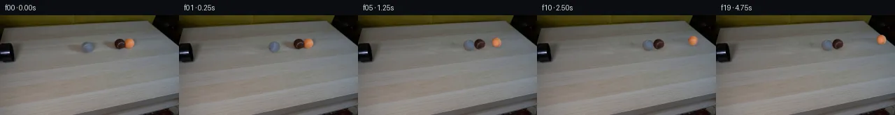

![首帧]()

Round 00
2026-11-04T21:45:26.482522+00:00像素候选变化代码 +283/−0inspection 更新
pixels 31e5ecbd4b166c06 · code 2e3ee04cf511dcfe
查看本轮 generate.py 真实 diff
--- previous/generate.py
+++ current/generate.py
@@ -0,0 +1,283 @@
+"""Deterministic local pixel animation; no external assets or generative models."""
+from pathlib import Path
+import json
+import numpy as np
+from PIL import Image, ImageDraw
+import cv2
+from scipy.ndimage import gaussian_filter, map_coordinates, distance_transform_edt
+from artifact_io import save
+
+ROOT = Path(__file__).resolve().parent
+SOURCE = np.asarray(Image.open(ROOT / 'first_frame.png').convert('RGB'), dtype=np.uint8)
+H, W = SOURCE.shape[:2]
+Y, X = np.mgrid[:H, :W].astype(float)
+
+# The measured visible ball ellipses. Radii are image-space appearance,
+# distinct from the small, slightly overlapping physical contact footprint.
+BALLS = [
+ dict(name='grey', center=np.array([125.5, 46.3]), radius=np.array([8.0, 7.8])),
+ dict(name='brown', center=np.array([172.2, 41.5]), radius=np.array([7.6, 7.6])),
+ dict(name='orange', center=np.array([185.5, 40.1]), radius=np.array([6.9, 7.1])),
+]
+axis = BALLS[1]['center'] - BALLS[0]['center']
+axis /= np.linalg.norm(axis)
+s_initial = np.array([0., np.linalg.norm(BALLS[1]['center'] - BALLS[0]['center']),
+ np.dot(BALLS[2]['center'] - BALLS[0]['center'], axis)])
+physical_radii = np.array([8.0, 7.0, s_initial[2] - s_initial[1] - 7.0])
+
+
+def removal_mask(which):
+ mask = np.zeros((H, W), np.uint8)
+ for i in which:
+ cx, cy = BALLS[i]['center']
+ rx, ry = BALLS[i]['radius']
+ cv2.ellipse(mask, (round(cx), round(cy)), (round(rx+3), round(ry+3)),
+ 0, 0, 360, 255, -1)
+ # Shadows are long to the left and lie close to each ball's baseline.
+ points = np.array([[cx-34, cy-4], [cx-20, cy-6], [cx-4, cy-6],
+ [cx+7, cy+4], [cx-2, cy+10], [cx-22, cy+5],
+ [cx-34, cy]], dtype=np.int32)
+ cv2.fillPoly(mask, [points], 255)
+ return mask
+
+
+def restore_table(which):
+ mask = removal_mask(which)
+ # Inpaint the low frequency table tone, then return a small amount of
+ # observed wood-grain detail from a clean nearby strip of the same image.
+ repaired = cv2.inpaint(SOURCE, mask, 7, cv2.INPAINT_TELEA).astype(float)
+ smooth = gaussian_filter(repaired, sigma=(1.4, 1.4, 0))
+ shifted = map_coordinates(SOURCE.astype(float),
+ [np.minimum(Y+22, H-1), X, np.zeros_like(X)], order=1)
+ texture = np.empty_like(repaired)
+ for c in range(3):
+ strip = map_coordinates(SOURCE[:,:,c].astype(float),
+ [np.minimum(Y+22, H-1), X], order=1)
+ texture[:,:,c] = strip - gaussian_filter(strip, sigma=1.3)
+ replacement = smooth + 0.72*texture
+ # The mask is larger than each source shadow, so a narrow feather stays
+ # on unobstructed table pixels and avoids a hard edge to the reconstruction.
+ inside = distance_transform_edt(mask > 0)
+ blend = np.clip(inside/2.4, 0, 1)[...,None]
+ out = SOURCE.astype(float)*(1-blend) + replacement*blend
+ return np.clip(out, 0, 255)
+
+BACKGROUND = restore_table([0, 1, 2])
+GREY_REMOVED = restore_table([0])
+
+
+def sample(array, x, y):
+ if array.ndim == 2:
+ return map_coordinates(array, [y, x], order=1, mode='nearest')
+ return np.stack([map_coordinates(array[:,:,c], [y, x], order=1, mode='nearest')
+ for c in range(array.shape[2])], axis=-1)
+
+
+def sphere_basis(nx, ny):
+ nz = np.sqrt(np.maximum(0, 1-nx*nx-ny*ny))
+ return np.stack([np.ones_like(nx), nx, ny, nz, nx*ny], axis=-1)
+
+
+def prepare_material(i):
+ ball = BALLS[i]
+ cx, cy = ball['center']; rx, ry = ball['radius']
+ # A dense front-hemisphere texture recovered from the source appearance.
+ u = np.linspace(-1, 1, 129)
+ nx, ny = np.meshgrid(u, u)
+ radial = np.sqrt(nx*nx + ny*ny)
… diff truncated; 196 more lines …